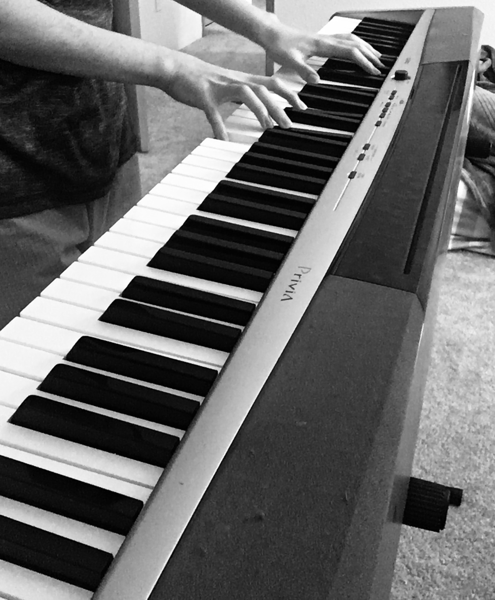
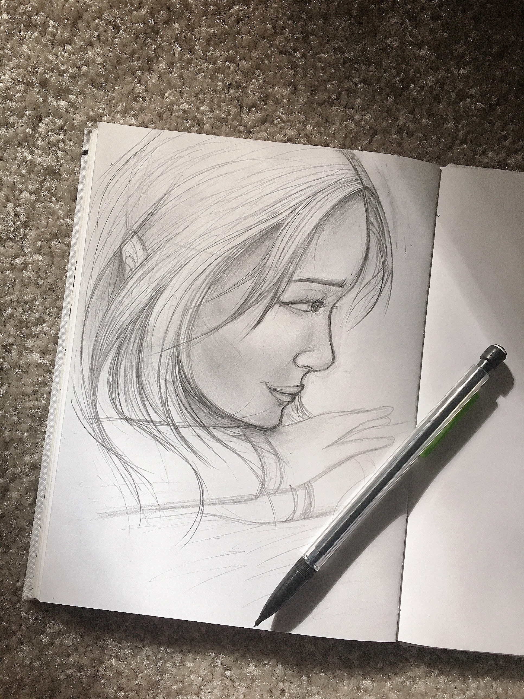
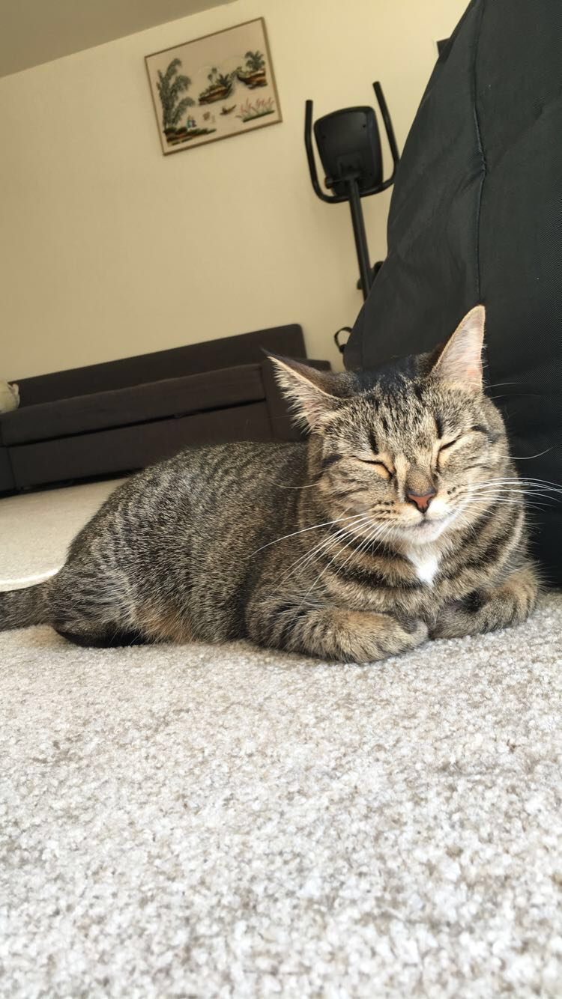

All 6 String Note for Correct Tune Guitar
- E(Low Top String/Note)
- A
- D
- G
- B
- E(High Bottom String/Note)

Chord C on Guitar

This blog will be used for learning basics for the Spanish/Español language, what I do while in Quarantine and what I like to do for fun!
A third of the blog will be the basics for learning the Spanish/Español language, what I do at my house during that day and the other half will be dedicated for beginners that want to learn chords and the notes that is played for guitar and other instruments.
| Subject | Music | Adobe XD |
| Description | Since I was 9 years old, I have been playing musical instruments | I have discovered an application platform that gives you the freedom to create sheet music like the ones I read in Middle and High School |
| Results | Recently I discovered the platform of Adobe XD that let's you create conecept designs for web and mobile applications and many more | Through a "Masterclass" from one of the Adobe XD experts I was able to create an animation that can be displayed in live streams that promoto the social media |
I'm the kind of guy that likes to draw, play music, and hang out with my cat.
During quarantine, I did pretty much all of those things. When I was still at school, I
never had enough time in the day to draw or play music. For the past two months, I was able
to make my time for myself while also managing to juggle schoolwork on the side.
| Music | Art | Cat Pics |
|---|---|---|
|  |  |  |
Here are some stuff about me you should know.

if you know some simple chords, you can play lots of songs!
All 4String Note for Correct Tune Ukulele

| Chord name | Tablature |
|---|---|
C |
 |
Am |
 |
F |
 |
numbers below the image is called Fret.
ex.1 means here 1st fret
This is just my way, so you can play the most comfortable way
| Chord name | finger position |
|---|---|
C |
|
Am |
|
F |
|
Hi There! This is will be your window into my Spring quarter!
Unfortunately I cannot play any instruments unlike my lovely team 4 mates! But I guarantee my page will nevertheless be interesting!
I'd like to share a little of what I've been doing quarantining while working on schoolwork!
| Video Games | Music | TV Shows/Anime |
|---|---|---|
| Modern Warfare Warzone | Gimme Love by Joji | Crash Landing on You and One Piece |
Modern Warfare Warzone - The rush of a Battle Royale victory with friends is unbeatable!
Gimme Love by Joji - Joji's blend of r&b and lo-fi is very satisfying and I've been enjoying his latest single.
I've recently noticed a trend of people posting Bill Clinton sitting by a hand rail with their top 4 albums and friend nominations.
I was recently nominated so I thought it'd be cool to try it out.

I'd probably rank these albums as...